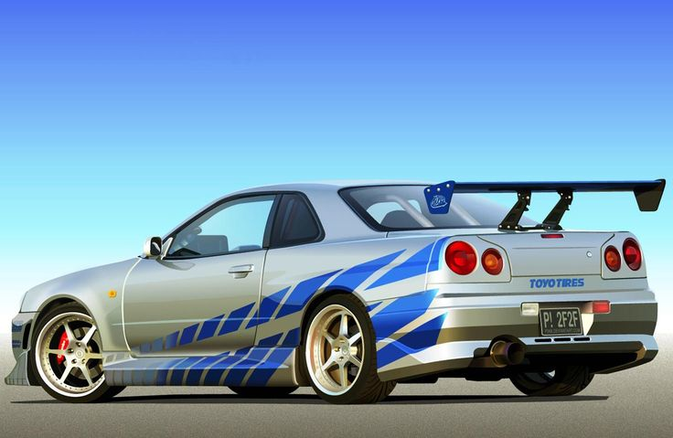
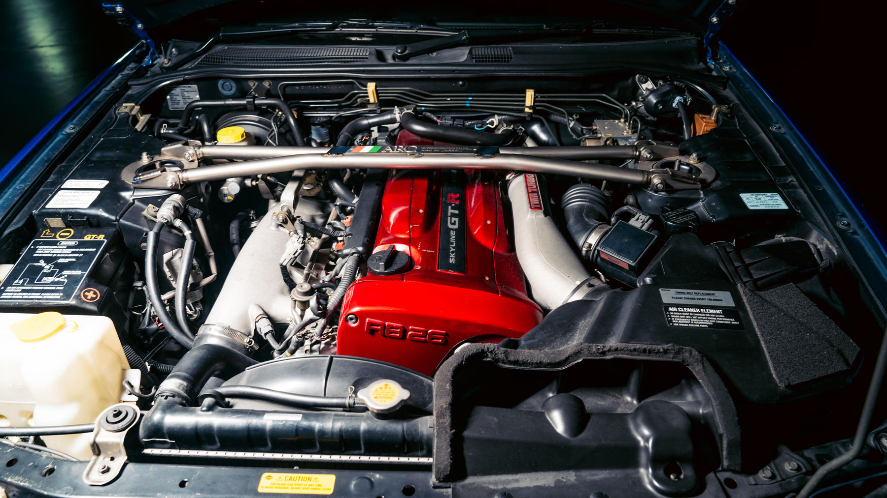

În „2 Fast 2 Furious”, Nissan Skyline GT-R R34 din 1999 condus de Brian O'Conner (Paul Walker) a devenit un simbol al culturii auto tunate, combinând performanță japoneză cu stil hollywoodian.


Model: Nissan Skyline GT-R R34 V-Spec
- An fabricație: 1999
- Motor: 2.6L RB26DETT, 6 cilindri în linie, twin-turbo
- Putere: 276 CP (oficial, dar în realitate putea depăși 400 CP datorită modificărilor)